Transformation Operations With Mappings
A mapping is a 3 3 perspective matrix that performs transformations of spatial locations in two dimensions. You can apply a mapping operation to a set of points either directly (as when directly modifying the geometry of a shape), or indirectly, by multiplying a mapping with another mapping (as when altering the mapping in the transform object associated with a shape).QuickDraw GX uses mappings to perform the following transformations on shapes or other two-dimensional data:
When you multiply two or more matrices to obtain a cumulative result, you concatenate, or accumulate the transformations of, both mappings. Matrix multiplication is not commutative. This means that [A] [B] � [B] [A]. As a result, the order that you concatenate is important. [A] is postmultiplied by [B] if [A] is replaced by [A] [B]. Conversely, [A] is premultiplied by [B] if [A] is replaced by [B] [A]. A mapping is applied to a point via postmultiplication (which is to say that points are row vectors); therefore, the default for applying one mapping to another is also postmultiplication.
- Translation shifts the position of a shape by the amount specified in the mapping. Translation functions allow you to specify either a relative shift along either coordinate axis, or an absolute shift to a new specified location.
- Scaling changes the size of a shape by the factor specified in the mapping. Scaling functions allow you to change size along either axis, and can also result in reflection about the coordinate axes.
- Rotation changes the angle of rotation of a shape by the amount specified in the mapping, rotating all points around a given point.
- Skewing changes the slant applied to a shape by the amount specified in the mapping. Skewing functions allow you to apply slant along either coordinate axis, relative to a given point. The term shearing is synonymous with skewing.
- Perspective modifies the positions of points to give a three-dimensional effect.
Multiple concatenations can occur in QuickDraw GX, such as when drawing picture shapes or when drawing any shape through a hierarchy of view ports. If you are going to apply several mappings to a relatively large bitmap or other shape, it is advantageous to concatenate the mappings first (with the
MapMappingfunction) and then apply the resultant mapping to the shape (with theGXMapShapefunction).The motivation is speed. It is much faster to concatenate mappings than to apply a mapping to a large number of points. For bitmaps, an additional motivation is accuracy. Each time a shape is transformed, a certain amount of roundoff error is introduced. Because the pixels of a bitmap are at integral coordinates, the roundoff error is on the average of a quarter pixel, compared with thousandths of a pixel for fixed-point coordinates.
QuickDraw GX provides two groups of mapping functions. The first group allows you to copy and perform standard matrix operations on mappings. With these functions, you can
The second group allows you to modify how a mapping transforms the objects or coordinate space it is applied to. With these functions, you can
- make a copy of a mapping
- normalize a mapping
- reset a mapping to identity
- invert a mapping
- concatenate (postmultiply) a mapping to another mapping
- apply a mapping to each of a given set of points
Figure 8-2 shows an example of how modifying a mapping can modify the scaling, rotation, skewing, and perspective of a shape.
- add translation to mapping
- modify a mapping to specify translation to an absolute location
- add horizontal and vertical scaling to a mapping
- add rotation to a mapping
- add horizontal and vertical skew to a mapping
Figure 8-2 Transformation operations with a mapping matrix
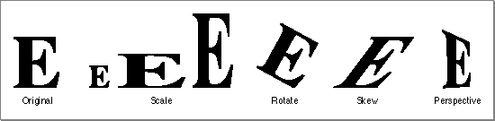
Characteristics of a Mapping
QuickDraw GX achieves these two-dimensional transformations of shapes and points on a plane by matrix multiplication of each Cartesian point P by the mapping matrix [T] to generate a transformed point P'.P(x, y) [T] = P'(x', y')
To multiply a two-dimensional point by a three-dimensional matrix, we first expand it to a three-dimensional point (x, y, 1). After multiplication, the resulting point is (x', y', z'), which normalizes to (x'/z', y'/z, 1) or, in two dimensions, (x'/z', y'/z).
The QuickDraw GX mapping is defined as
struct gxMapping { Fixed map[3][3];};The mapping consists of linear elements a, b, c, and d; perspective elements u and v; translation elements h and k; and the scale factor w, which is commonly set tofract1. Although defined as containing onlyFixednumbers, the rightmost column of the matrix--containing elements u, v, and w--consists offractnumbers. Figure 8-3 shows the elements of the matrix in place.Figure 8-3 Mapping matrix elements
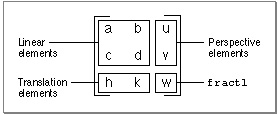
Point P(x, y) is transformed to point P'(x', y') by matrix multiplication of the row vector
[x y 1] by the mapping matrix to yield the expanded general expression shown in
Figure 8-4.Figure 8-4 Applying a mapping matrix to a point
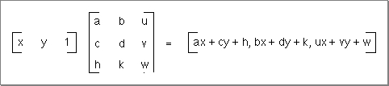
The x and y elements of the transformed vector can be mapped back to the x and y-coordinates by dividing each element by the term ux + vy + w. The resulting general expression for the transformation of point P(x, y) to P'(x', y') is shown in Figure 8-5.
Figure 8-5 The point (x, y) as transformed by the mapping matrix
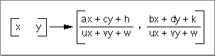
A mapping is normalized whenever the transformation matrix element w has the value 1. Most QuickDraw GX mapping operations will be automatically normalized. However, mappings that an application generates itself might not be normalized. Subsequent operations with that mapping may be slow.
If a mapping does not specify perspective (that is, if its perspective elements u and v are zero), normalization of the transformation involves dividing the map by the absolute value of w, if possible. If this division is not possible (due to overflow) or if the mapping specifies perspective, normalization involves bit-shifting each element of the mapping to the left. The amount of shift provided by the minimum of the following two operations is selected:
The identity mapping, or identity matrix, has the unique characteristic that it maps points to the same point. The identity matrix has all diagonal elements equal to 1 and all other matrix elements have the value 0. The identity matrix is shown in Figure 8-6.
- shift the minimum number of bits so that the absolute value of some element of the mapping is >=
fract1(compared aslongvalues).- shift the maximum number of bits so that the sum of the absolute values of u and v is <=
fract1-fixed1(compared aslongvalues).Figure 8-6 The identity matrix
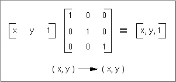
The inverse of a mapping is the mathematical inverse of the matrix. This means that if you concatenate a mapping with its inverse, you will get the identity matrix.
The rest of this section discusses the use of the mapping functions in modifying the translation, scaling, rotation, and skewing factors in a mapping. It ends with a discussion of how to modify the perspective factors in a mapping. For additional information about the use of mappings in the transform object and in view port and view device objects, see the chapters "Transform Objects" and "View-Related Objects," respectively, in Inside Macintosh: QuickDraw GX Objects.
Translation by a Relative Amount
You can use theMoveMappingfunction to make a relative change (in both x and y) to the translation specified by a mapping. Matrix elements h and k control the amount of the translation. Figure 8-7 shows what happens to a mapping M when you callMoveMappingand specify horizontal and vertical offsets ofhOffsetandvOffset. A purely translational matrix is applied to the target mapping, so that the resultant mapping's translation is increased by the specified offsets.Figure 8-7 Changing the translation specified by a mapping
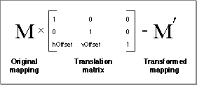
Figure 8-8 shows the use of the
MoveMappingfunction to provide translation of a mapping by the increments given by thehOffsetandvOffsetparameters. TheMoveMappingfunction is described on page 8-67.Figure 8-8 Translation by a relative amount with
MoveMapping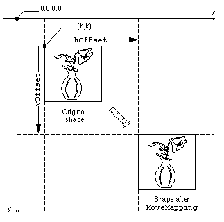
Translation to a Specified Point
You can specify translation of the origin to a given point by using theMoveMappingTofunction. Moving the origin means that the point (0, 0) will become the point (h, k) after the mapping is applied to it. Matrix elements h and k again control the amount of translation. Figure 8-9 shows what happens to a mapping M when you callMoveMappingToand specify the desired location (hPosition,vPosition). A relative translation of (-h/w, -k/w) is applied to the target mapping to bring its origin to (0, 0), and then a relative translation of (hPosition,vPosition) is applied. The resultant mapping ends up with translational values ofhPositionandvPosition.Figure 8-9 Setting the origin specified by a mapping
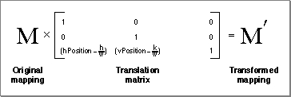
Figure 8-10 shows the use of the
MoveMappingTofunction to move the origin to a specific location. Note that this figure assumes that the origin of the shape--point (0.0, 0.0) in its geometry--is at its upper left corner. TheMoveMappingTofunction is described on page 8-68.Figure 8-10 Translation to a specific origin location
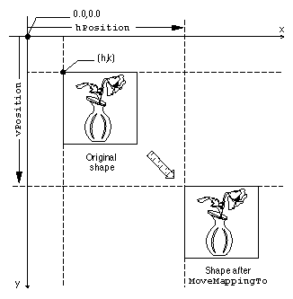
Scaling
You can use theScaleMappingfunction to modify the scaling factors in a mapping. Matrix elements a and d in the mapping matrix control the degree of the scaling in the horizontal and vertical directions, respectively. Figure 8-11 shows what happens to a mapping M when you callScaleMappingwith horizontal and vertical scaling factors ofhFactorandvFactorand a center of scaling at (xCenter,yCenter). First, a relative translation of -xCenterand -yCentermoves the center of scaling to (0, 0); then a purely scaling matrix multiplies the scaling byhFactorandvFactor; finally, another relative translation moves the center of scaling by+xCenterand +yCenter. In effect, the center of scaling is moved to (0, 0), the scaling is applied, and the scaling center is then moved back to where it was.Figure 8-11 Changing the amount of scaling specified by a mapping
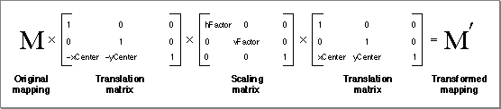
Figure 8-12 shows the use of the
ScaleMappingfunction scale for various horizontal and vertical factors, in which the center of scaling corresponds to the center of the shape. TheScaleMappingfunction is described on page 8-69.Figure 8-12 Scaling horizontally and vertically
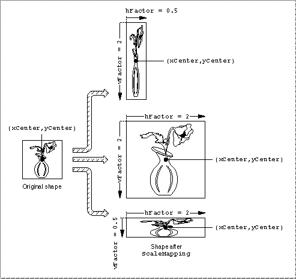
Note that if
vFactorequalshFactor, scaling is uniform in both directions. IfvFactoris not equal tohFactor, distortion of the image occurs, as shown in Figure 8-12.The mapping matrix also accommodates reflection transformations. If
hFactoris negative, a reflection about the vertical axis occurs. IfvFactoris negative, a reflection about the horizontal axis occurs. If bothvFactorandhFactorare negative, a 180 rotation occurs.Rotation
You can use theRotateMappingfunction to modify the rotation specified by a mapping. Matrix elements a, b, c, and d together specify the angle of rotation. Figure 8-13 shows what happens to a mapping M when you callRotateMappingto rotate by an angle b about a rotational origin ofxCenterandyCenter. First, a relative translation of -xCenterand -yCentermoves the center of rotation to (0, 0); then a purely rotational matrix adds b to the amount of rotation already specified in the mapping; finally, another relative translation moves the center of rotation by+xCenterand +yCenter, back to where it was.Figure 8-13 Changing the degree of rotation specified by a mapping
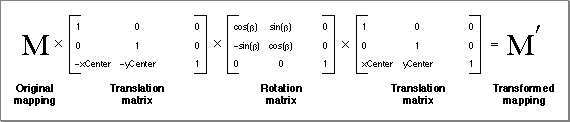
Figure 8-14 shows the use of the
RotateMappingfunction to change the rotation of a mapping. Note that positive values of the angle parameter cause clockwise rotation (consistent with y values increasing downward), and note also that changing the center of rotation can significantly change the final position of the rotated objects. TheRotateMappingfunction is described on page 8-70.Figure 8-14 Rotating about different center points
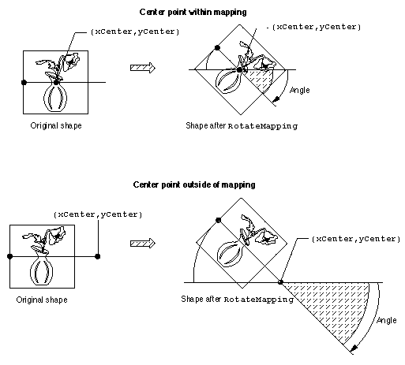
Skewing
You can use theSkewMappingfunction to modify the skewing imposed by a mapping. Matrix elements b and c control the amount of the skew. Element b controls skew in the y direction and element c controls skew in the x direction. Figure 8-15 shows what happens to a mapping M when you callSkewMappingwith x and y skew factors ofxSkewandySkew, and a skew origin (the point at which no shearing takes place) ofxCenterandyCenter. First, a relative translation of -xCenterand -yCentermoves the center of skewing to (0, 0); then a purely skewing matrix modifies the amount of skew already specified in the mapping; finally, another relative translation moves the center of skewing by+xCenterand +yCenter, back to where it was.Figure 8-15 Changing the amount of skew specified by a mapping
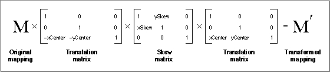
Figure 8-16 shows the use of the
SkewMappingfunction to change the skew specified by a mapping. (Note that the skew in the x direction in Figure 8-16 is negative; as y decreases--upward--the amount of shear in the x direction increases.) TheSkewMappingfunction is described on page 8-71.Figure 8-16 Skewing a shape both horizontally and vertically
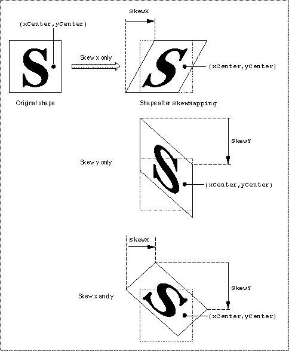
Perspective
You can manipulate the elements of a mapping to modify its specification of perspective. The matrix elements u, v, and w determine how the perspective will appear when the mapping is applied. The action performed on a point by a mapping whose perspective elements are nonzero is shown in Figure 8-18.Figure 8-17 Changing the perspective specified by a mapping
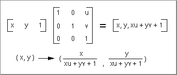
There is currently no QuickDraw GX function that modifies the perspective-controlling elements of a mapping for you. If you wish to create perspective, you need to modify the individual matrix elements directly.